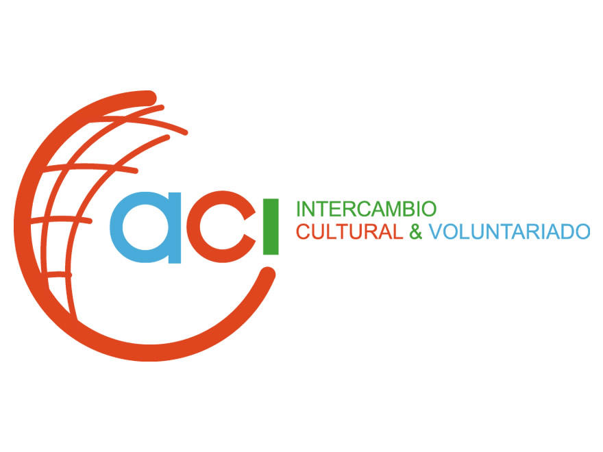

FundáCR
ACI CR
Es una fundación sin fines de lucro, con el fin
de jóvenes de Costar Rica y jóvenes extranjeros puedan
irse de intercambio a realizar proyectos de bien social,
por ejemplo: ir de voluntario a ayudar a una comunidad
marginada en otro país;
actualmente es la principal plataforma
de movilidad internacional de jóvenes en el país.
Objetivos:
- Promover el aprendizaje de un segundo idioma.
- Desarrollar proyectos que beneficien a la comunidad Costarricense.
- Exponer la cultura Costarricense al mundo.